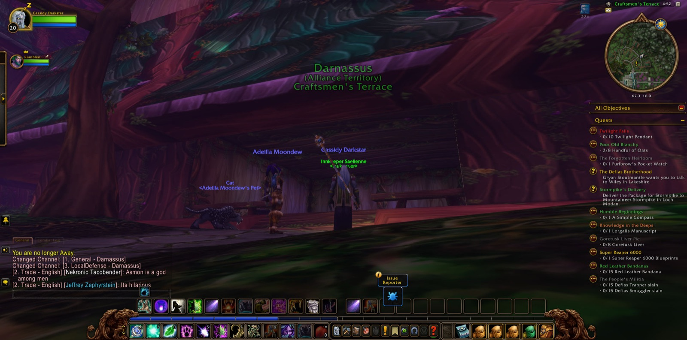
Cassidy Darkstar set out from Lake Elune'ara in Moonglade, and he soon joined forces with Rambleon, a Hunter, who would walk beside him for nearly all of that long road. Together they passed through Darnassus and the Craftsmen's Terrace, and Cassidy took a picture as he came into the city. From Rut'theran Village they crossed The Veiled Sea to Darkshore. They passed Mist's Edge, Auberdine and The Long Wash, then went out over the water again until they reached Stormwind Harbor. In the Mage Quarter of Stormwind City he saw "Devils in Westfall" through to its end. He took up a new errand there as well: to carry the Scroll of Messaging to Gaxim Rustfizzle in Stonetalon, a charge that would wait for another road.
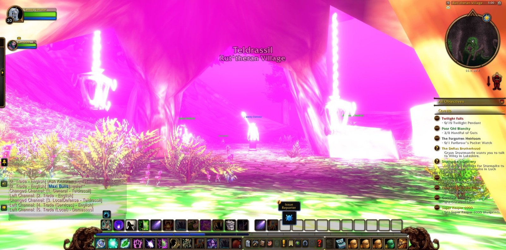
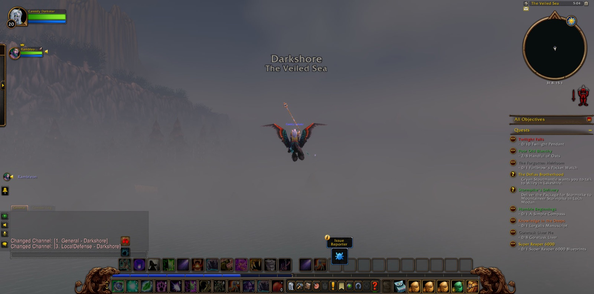
From the Valley of Heroes they passed into Elwynn Forest, through Goldshire and Forest's Edge, and came down into Westfall. They walked the old farms one after another: The Jansen Stead, Furlbrow's Pumpkin Farm, Saldean's Farm and The Molsen Farm. Along the way Cassidy gathered all eight handfuls of oats for Poor Old Blanchy. At Alexston Farmstead a Harvest Watcher fell before him, and he took up the matter of "... and that note you found." Beyond Moonbrook and in The Dagger Hills he accepted "Thunderbrew." Here the companions met the Defias for the first time: Pathstalkers, Knuckledusters and Highwaymen. At Demont's Place he took up "Collecting Memories."
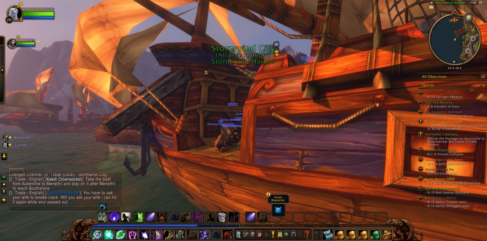
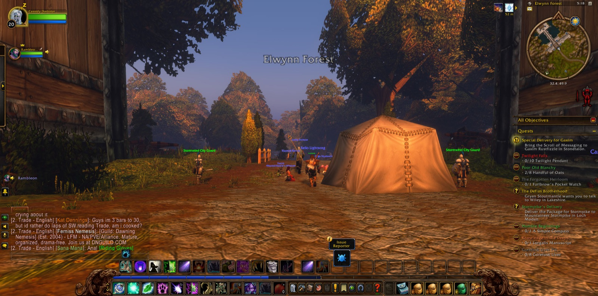
Then they went down into The Deadmines. A Mage named Cortonna stood with them only briefly. Dire the Warrior joined them at the threshold and stayed through all the delving that followed. Jstermy, a Hunter, and Emchetyre, a Mage, came soon after. In that dark company they fought through Defias Diggers and Miners and Conjurers, and Marisa du'Paige fell before them. Rhahk'Zor followed, and in the Mast Room the Goblin Woodcarvers went down. Then Sneed and his Shredder were overcome, and the deed asked of them in "Underground Assault" against Gnoam Sprecklesprocket was done. In the Goblin Foundry, among its Craftsmen and Engineers, Gilnid was slain. Cassidy took picture after picture of those halls, as though he meant to keep each one. The road below was not without falls, and once or twice he had to walk back from Sentinel Hill. But each time he went down again, and at last the company came to Ironclad Cove. There they fought Defias Pirates, Squallshapers and Blackguards. In all they had passed through more than a hundred and seventy foes, and the Druid had borne his part.
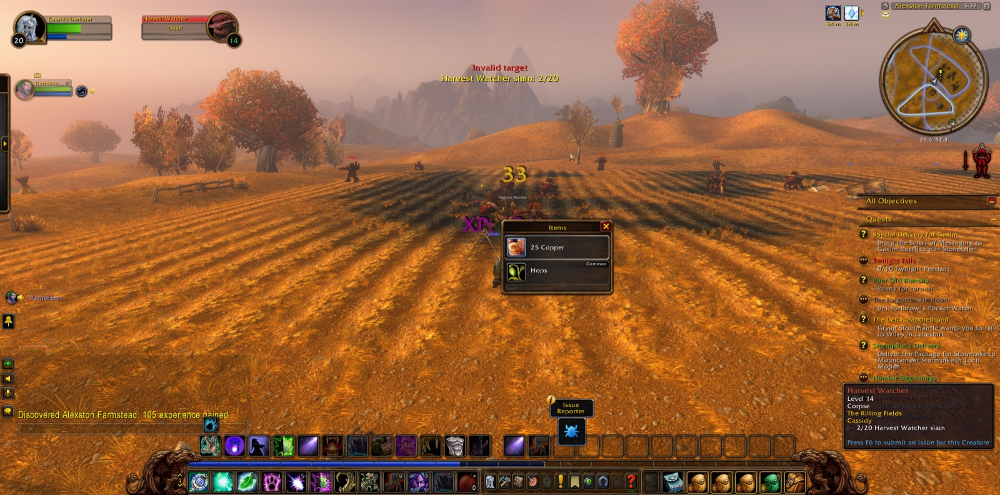
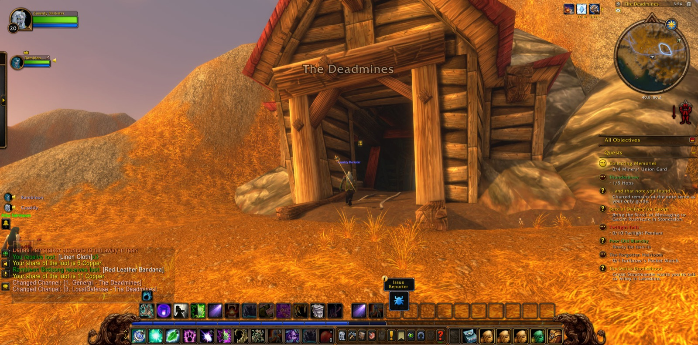
At Ironclad Cove the delving ended, and the companions went their separate ways. Rambleon alone joined him again. The two of them went out to The Dead Acre, where Harvest Reapers and a Greater Fleshripper were overcome, and Cassidy took two more pictures before they turned back. They came again to Sentinel Hill, and there Cassidy Darkstar rested, with the scroll for Gaxim still in his keeping and the westward fields still open before him.
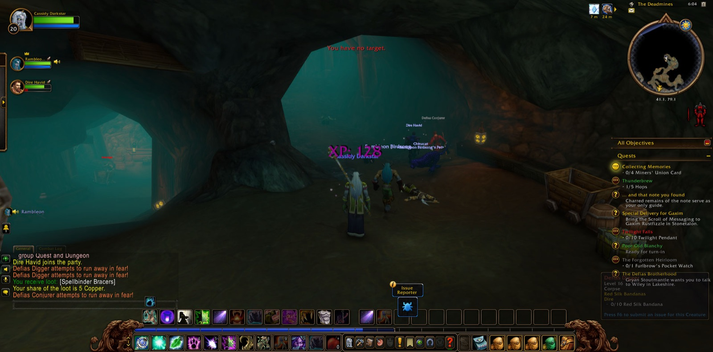
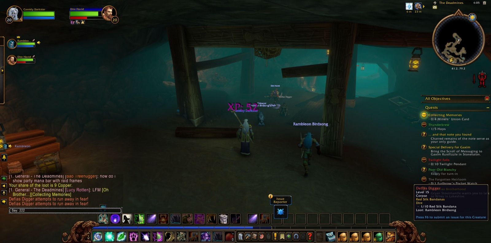
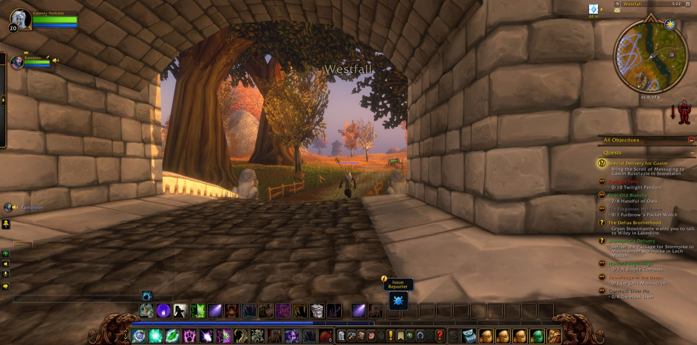
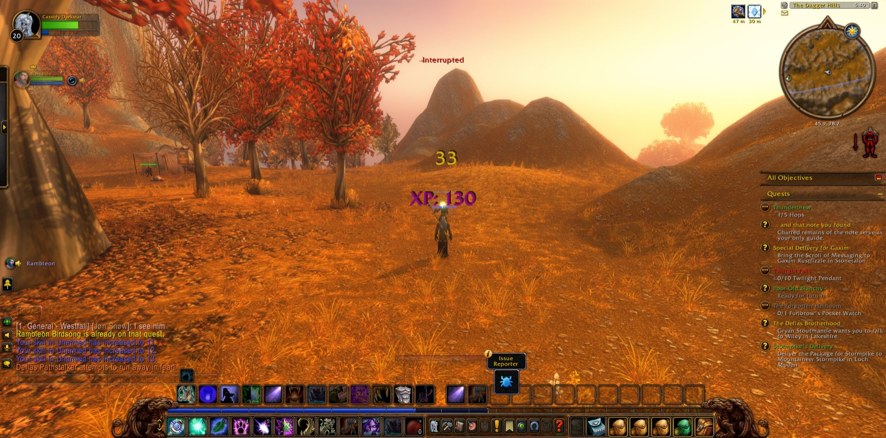
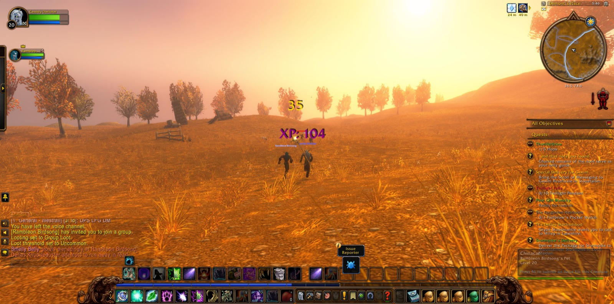
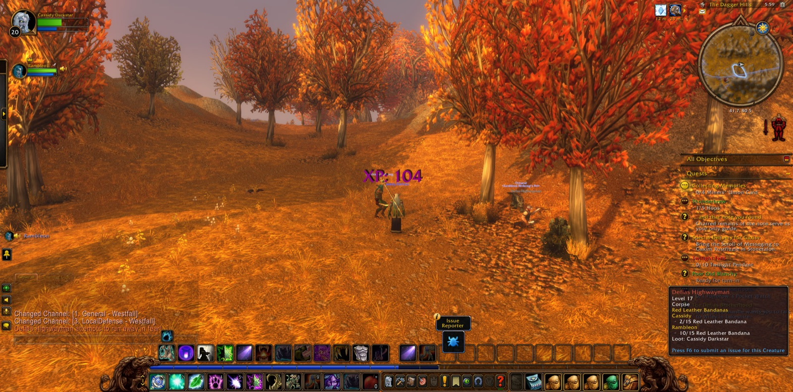
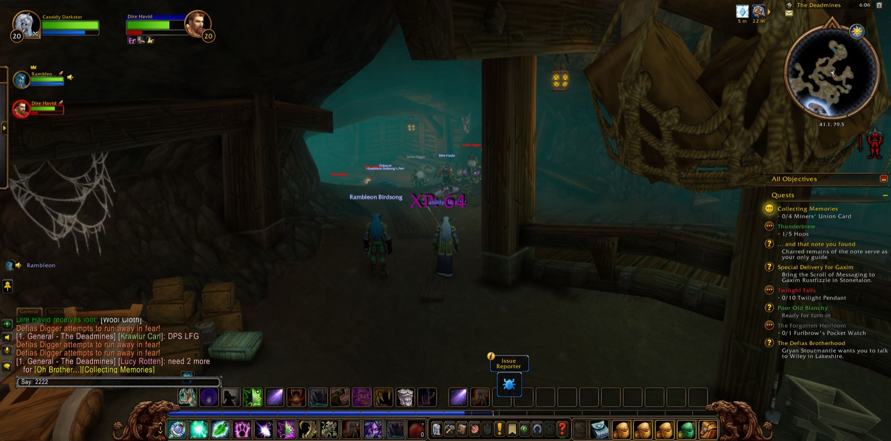
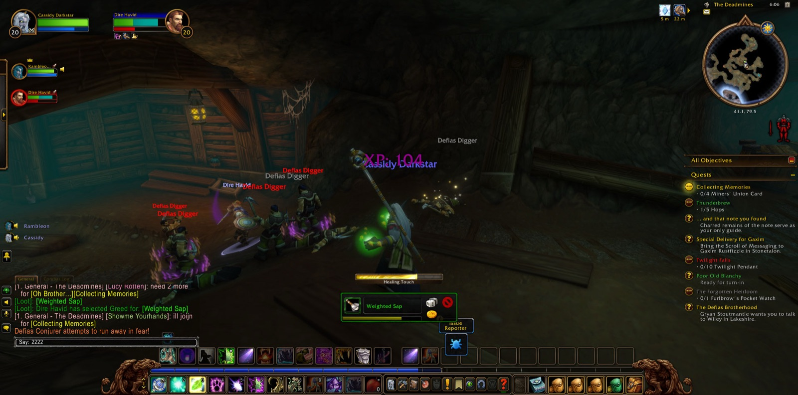